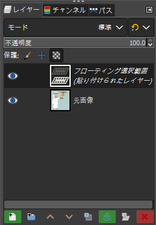
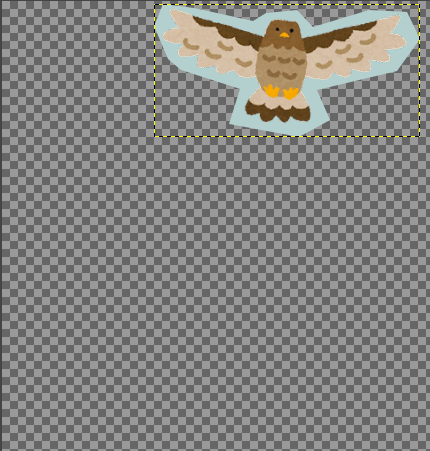
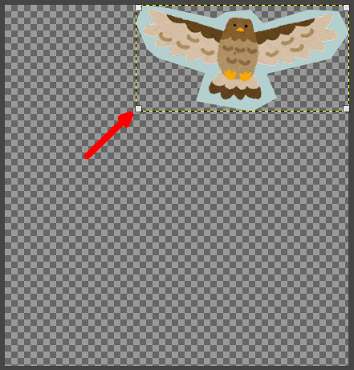
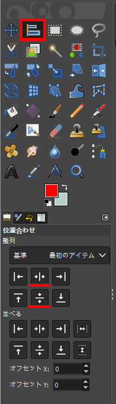
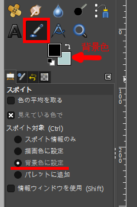

画像の一部を切り取り、中央に配置する
画像の一部を切り取り、中央に配置します。 以下では、切り取る画像部分を切り取り対象と呼びます。 画像サイズは変更しません。
Note
ここでは例として、画像中のフクロウを切り取って中央に配置します。
選択ツールで切り取り対象を選択
選択ツールで切り取り対象を選択します。
Note
背景色が単一色であるよう場合、選択ツールは 自由選択 や 電脳はさみ を使えばよいでしょう。
ここでは自由選択で切り取っています。
また、画像の背景が複雑な場合、選択ツールは 前景抽出選択 などの方がよいかもしれません。
Tip
自由選択 は、ツールボックス下部のオプションで なめらかに と 境界をぼかす が選択できます。
状況に応じてチェックの有無を変更してください。
切り取り対象を囲った後、内部をダブルクリックするか、 Enter キーを押下することで、選択が確定します。
選択が確定すると、選択範囲が白と黒の動く破線で囲まれます。
選択範囲のコピーと貼り付け
選択範囲を以下の手順でコピーし、貼り付けます。
- メニュー
編集>コピーを選択 - メニュー
編集>貼り付けを選択
Tip
ショートカットキーを使えば、コピーは Ctrl + C で、貼り付けは Ctrl + V で可能です。
画像には一見変化がありませんが、ドックのレイヤーダイアログを見ると、 フローティング選択範囲 という新しいレイヤーが発生しています。

レイヤーダイアログの フローティング選択範囲 を右クリックし、コンテキストメニューから 新しいレイヤーの生成 を選択します。
レイヤーダイアログで元画像のレイヤーを非表示にすれば、切り取り対象が貼り付けられていることを確認できます。
レイヤーを非表示にするには、非表示にしたいレイヤーの 保護 列にある目玉のアイコンをクリックします。

切り取り対象の移動
切り取り対象をキャンバスの中央に配置します。
移動する前に、切り取り対象のあるレイヤーを焦点レイヤーにする必要があります。
Tip
GIMP のヘルプでは、焦点レイヤーは focused layer （未翻訳）となっています。
- レイヤーダイアログで切り取り対象のレイヤーを選択し、活性レイヤーにする
- ツールボックスから変形ツールのひとつ
整列を選択 - 画像ウィンドウで直接切り取り対象をクリックし、焦点レイヤーにする
焦点レイヤーになると、レイヤーの四隅に小さな四角形が現れます。

Warning
活性レイヤーであるだけでは、変形ツール 整列 で移動できません。
ツールボックス下部のオプションで位置合わせを行います。
位置合わせ>整列>中央揃え(水平方向の)を押下位置合わせ>整列>中央揃え(垂直方向の)を押下

切り取り対象がキャンバスの中央に配置されます。
背景の作成
元の背景色を スポイト で抽出し、背景専用のレイヤーを作成します。
まずは下記の手順で、新しいレイヤーを作るための背景色を取得します。
- ツールボックスで
スポイトを選択 - ツールボックス下部のオプションで
スポイト対象を背景色に設定にする - 画像ウィンドウで背景色をスポイトする
背景色が設定されます。

下記の手順で新しいレイヤーを作成します。
- メニュー
レイヤー>新しいレイヤーの追加を選択 - ウィンドウ
新しいレイヤーで塗りつぶし色を背景色にする - ドック下部のレイヤーダイアログで、新しく作成したレイヤーを切り取り対象のレイヤーより後ろにする
Tip
ウィンドウ 新しいレイヤー は、レイヤーダイアログ下部の小さなアイコンを押下しても開くことができます。
完成です。